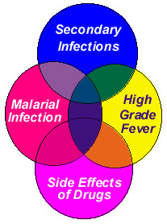

Malaria is a febrile illness characterised by fever and related symptoms. However it is very important to remember that malaria is not a simple disease of fever, chills and rigors. In fact, in a malarious area, it can present with such varied and dramatic manifestations that malaria may have to be considered as a differential diagnosis for almost all the clinical problems! Malaria is a great imitator and trickster, particularly in areas where it is endemic.
All the clinical features of malaria are caused by the erythrocytic schizogony in the blood. The growing parasite progressively consumes and degrades intracellular proteins, principally hemoglobin, resulting in formation of the ‘malarial pigment’ and hemolysis of the infected red cell. This also alters the transport properties of the red cell membrane, and the red cell becomes more spherical and less deformable. The rupture of red blood cells by merozoites releases certain factors and toxins (such as red cell membrane lipid, glycosyl phosphatidyl inositol anchor of a parasite membrane protein), which could directly induce the release of cytokines such as TNF and interleukin-1 from macrophages, resulting in chills and high grade fever. This occurs once in 48 hours, corresponding to the erythrocytic cycle. In the initial stages of the illness, this classical pattern may not be seen because there could be multiple groups (broods) of the parasite developing at different times, and as the disease progresses, these broods synchronise and the classical pattern of alternate day fever is established. It has been observed that in primary attack of malaria, the symptoms may appear with lesser degree of parasitemia or even with submicroscopic parasitemia. However, in subsequent attacks and relapses, a much higher degree of parasitemia is needed for onset of symptoms. Further, there may be great individual variations with regard to the degree of parasitemia required to induce the symptoms.
The first symptoms of malaria after the pre-patent period (period between inoculation and symptoms, the time when the sporozoites undergo schizogony in the liver) are called the primary attack. It is usually atypical and may resemble any febrile illness. As the disease gets established, the patient starts getting relapse of symptoms at regular intervals of 48-72 hours. The primary attack may spontaneously abort in some patients and the patient may suffer from relapses of the clinical illness periodically after 8-10 days owing to the persisting blood forms of the parasite. These are called as short term relapses (recrudescences). Some patients will get long term relapses after a gap of 20-60 days or more and these are due to the reactivation of the hypnozoites in the liver in case of vivax and ovale malaria. In falciparum and malariae infections, recrudescences can occur due to persistent infection in the blood.
Manifestations of acute malarial illness
While most of the the clinical manifestations of malaria are caused by the malarial infection per se, high grade fever as well as the side effects of anti malarial therapy can also contribute to the clinical manifestations. All these may act in unison, further confusing the picture. In some cases, secondary infections like pneumonia or urinary tract infection can add to the woes. All these facts should always be kept in mind.
{kind=link}
Typical features: The characteristic, text-book picture of malarial illness is not commonly seen. It includes three stages viz. Cold stage, Hot stage and Sweating stage. The febrile episode starts with shaking chills, usually at mid-day between 11 a.m. to 12 noon, and this lasts from 15 minutes to 1 hour (the cold stage), followed by high grade fever, even reaching above 1060 F, which lasts 2 to 6 hours (the hot stage). This is followed by profuse sweating and the fever gradually subsides over 2-4 hours. These typical features are seen after the infection gets established for about a week. The febrile paroxysms are usually accompanied by head aches, vomiting, delirium, anxiety and restlessness. These are as a rule transient and disappear with normalization of the temperature.
In vivax malaria, this typical pattern of fever recurs once every 48 hours and this is called as Benign Tertian malaria. Similar pattern may be seen in ovale malaria too (Ovale tertian malaria). In falciparum infection (Malignant tertian malaria), this pattern may not be seen often and the paroxysms tend to be more frequent (Sub-tertian). In P. malariae infection, the relapses occur once every 72 hours and it is called Quartan malaria.
Atypical features:
In an endemic area, malaria often presents with atypical manifestations
Atypical features are more common in the following situations:
- Falciparum malaria
- Early infection
- Patients at extremes of age
- Patients who are immune-compromised (extremes of age, malnourished, AIDS, tuberculosis, cancers, on immunosuppressive therapy etc.)
- Patients on chemoprophylaxis for malaria
- Patients who have had recurrent attacks of malaria
- Patients with end stage organ failure
- Last but not the least, pregnancy
Atypical fever: In an endemic area, it is rather unusual to find cases with typical fever pattern. Some patients may not have fever at all and may present with other symptoms listed below. Many present with fever of various patterns – low grade to high grade, with or without chills, intermittent to continuous, or even as cases of prolonged fever. In the initial stages of the illness, fever may be quotidian, with more than one spike per day and this is due to the development of multiple broods of the parasite. As the disease progresses, these broods get synchronised and the fever tends to be more uniform. However in cases of P. falciparum malaria and mixed infections, this pattern of multiple spikes may continue.
Headache: Headache may be a presenting feature of malaria, with or without fever. It can be unilateral or bilateral. Some times the headache could be so intense that it may mimic intra-cranial infections or intra-cranial space occupying lesions. It may also mimic migraine, sinusitis etc. Presence of projectile vomiting, papilloedema, neck stiffness and focal neurological signs would suggest other possibilities.
Body ache, back ache and joint pains: These symptoms are fairly common in malaria. These can occur even during the prodromal period and at that stage these are generally ignored and diagnosis of malaria is impossible owing to lack of peripheral parasitemia. They are also common accompaniments of the malaria paroxysm. Sometimes, malaria may present only with these symptoms, particularly in cases of recurrent malaria.
Dizziness, vertigo: Some patients may present with dizziness or vertigo, with or without fever. They may also have associated vomiting and/or diarrhoea. This may mimic labyrinthitis, Menniere’s disease, vertebro-basilar insufficiency etc. Rarely patients may present with swaying and cerebellar signs. Drugs like chloroquine, quinine, mefloquine and halofantrine can also cause dizziness, vertigo, and tinnitus.
Altered behaviour, acute psychosis: Patients may present with altered behaviour, mood changes, hallucinosis or even acute psychosis, with or without fever. Malaria may be detected accidentally in such cases and they improve completely with anti malarial therapy. Altered behaviour may also be due to high grade fever or drugs. Antimalarial drugs like chloroquine, quinine, mefloquine and halofantrine can cause restlessness, hallucinations, confusion, delirium or even frank psychosis.
In a study of 118 cases of malaria in Mangalore, Nagesh Pai, Satish Rao and B.S. Kakkilaya found varied psychiatric manifestations. Most of these patients were already on antimalarial treatment at the time of referral to the psychiatric service (unpublished data).
| Feature | (n=118) | Feature | (n=118) |
| Delirium | 22 | Organic hallucinosis | 12 |
| Organic catatonic disorder | 4 | Organic delusional disorder | 9 |
| Organic mania | 7 | Organic Depressive disorder | 13 |
| Organic anxiety | 26 | Organic dissociative disorder | 2 |
| Mild cognitive disorder | 4 | Multiple vague complaints > 7days | 8 |
| Headache >7 days | 11 |
Altered sensorium: Patients with P. falciparum malaria may present with altered sensorium due to severe infection, hypoglycemia, electrolyte imbalance due to vomiting or diarrhoea (particularly the elderly), hyperpyrexia, subclinical convulsions etc. Differential diagnosis will include acute encephalitis, meningitis, metabolic encephalopathy etc. As a rule of the thumb, malaria should be considered a possibility in all cases of acute neuropsychiatric syndromes and in cases of proven malaria, other possibilities should be considered in the presence of papilloedema, increasesd ICT, neck stiffness and focal deficits.
Convulsions, coma: Patients with cerebral malaria present with generalised seizures and deep unarousable coma. Sometimes one single fit can precipitate deep, unarousable coma. These could also be due to hypoglycemia and all patients presenting with these manifestations should be administered 25-50% dextrose immediately. Drugs like chloroquine, quinine, mefloquine and halofantrine may also trigger convulsions.
Cough: Cough may be a presenting feature of malaria, particularly P. falciparum infection. Patient may have pharyngeal congestion and features of mild bronchitis. Patients who have persistent cough and/or fever even after clearance of parasitemia should be evaluated for secondary bacterial pneumonias/ bronchopneumonia and bronchitis.
Breathlessness: In severe falciparum malaria, patients may present with history of breathlessness, due to either severe anemia or non-cardiogenic pulmonary oedema. Secondary respiratory tract infections and lactic acidosis are other rarer causes for tachypnoea and/or breathlessness in these patients. Patients with pre-existing cardio-vascular or pulmonary compromise may deteriorate or even die if they suffer from severe malaria.
Chest pain: Acute retrosternal or precordial pain may be presenting feature of malaria. It may radiate to the left or right shoulder tips or arms. It is due to rapid increase in the splenic size and perisplenitis. This pain may mimic acute myocardial infarction, pleurisy, neuralgia etc. Coupled with breathlessness, sweating and hypotension (algid malaria), the picture will very closely resemble that of acute MI.
Acute abdomen: Patients can present with acute abdominal pain, guarding and rigidity, mimicking bowel perforation, acute appendicitis, acute cholecystitis, ureteric colic etc.
One such patient presented with pain abdomen and vomiting with low grade fever, and on examination had tenderness in the right lower abdomen. He was posted for appendicectomy. Pre operative blood test revealed P. falciparum malaria and he recovered completely with anti malarials!
Weakness: Sometimes patients may present with history of weakness, malaise and prostration. On examination they may have significant pallor, hypotension, dehydration etc. Algid malaria may present like this and the patient may not have fever at all. Chloroquine is also known to cause profound muscular weakness and a new disease called macrophagic myofaciitis has been described in patients receiving chloroquine.
Vomiting and diarrhoea: Malaria can present as a case of acute gastroenteritis with profuse vomiting and watery diarrhoea (Choleraic form). Vomiting is very common in malaria and is due to high grade fever, the disease itself or even drugs. Vomiting may pose problems in administering antimalarial treatment. These could also be due to drugs like chloroquine and due to secondary bacterial or amebic colitis.
Jaundice: Patients may present with history of yellowish discoloration of eyes and urine. Mild jaundice is fairly common in malaria and may be seen in 20-40% of the cases. Deeper jaundice with serum bilirubin of more than 3 mg/dL is seen in severe P. falciparum malaria and is associated with anemia, hyperparasitemia and malarial hepatitis with elevated serum enzymes. Malaria must be considered as a differential diagnosis for all cases of jaundice in a malarious area.
Pallor: Severe anemia can be a presenting feature of malaria. It is usually normocytic normochromic. It may pose special problems in pregnancy and in children. Pre-existing nutritional anemia may be aggravated by malaria.
Puffiness of lids: Occasionally patients may present with puffiness of lids, with or without renal dysfunction.
Secondary infections: Malaria produces significant immune suppression and this can result in secondary infections. Common among them are pneumonia, aspiration bronchopneumonia (in the elderly), urinary tract infection, colitis etc. Meningitis and enteric fever have also been reported. In falciparum malaria, severe infection can lead to septicaemic shock (algid malaria). Persistence of fever, neutrophilic leucocytosis and focal signs of infection should always alert the clinician to this possibility of secondary infections.
Hepatosplenomegaly: Patients can present with enlargement of liver and/or spleen, tender or non-tender, with or without fever. Rapid enlargement of spleen or liver in malaria can cause acute pain in the abdomen or chest. Generally, organomegaly is noticed in the second week of malarial illness. However, in cases of relapse or recrudescence, it may be present earlier. Also, in immune compromised patients splenomegaly may be absent. In pregnancy, particularly second half, splenomegaly may be smaller or an enlarged spleen may regress in size due to immune suppression. Although splenomegaly is a cardinal sign of malaria, absence of splenomegaly does not rule out the possibility of malaria.
Combinations of the above: Patients can frequently present with various combinations of the above mentioned symptoms and signs, further confusing the picture.
This list is not exhaustive and malaria may present in many other ways. In all the above listed situations, patients may not have associated fever, thus confusing the picture. In some, fever may follow these symptoms. Therefore, one should not wait for the typical symptoms of malaria to get a blood test done; it is always better to do a smear whenever reasonable doubt exists.
Clinical features suggesting P. falciparum infection:
- Presence of any of the complications of P. falciparum malaria viz. altered sensorium; convulsions; coma; jaundice; severe anemia; hypotension; prostration; hyperpyrexia; renal failure etc.
- Atypical presentation
- Not responding to chloroquine therapy within 48 hours.
- Recurrence within 2 weeks.
Differential diagnosis:
Malaria can be offered as a differential diagnosis for a big list of diseases.
General: All other causes of fever, migraine, sinusitis, tension headache etc.
Respiratory system: Pharyngitis, bronchitis, pneumonia, bronchopneumonia, pleurisy.
Cardiovascular: Acute myocardial infarction, cardiogenic shock, left ventricular failure, pericarditis
Abdominal: Hepatitis, liver abscess, splenitis, splenic abscess, other causes of splenomegaly, subdiaphragmatic abscess, acute abdomen, cholecystitis, cholangitis, gastroenteritis, amebiasis, appendicitis, etc.
Central nervous system: Acute encephalitis, meningitis, intra-cranial space occupying lesions, stroke, metabolic encephalopathy etc.
Psychiatry: Acute confusional states, acute psychosis, mood disorders
Renal: Acute nephritis, nephrotic syndrome, acute renal failure
Haematological: All other causes of anemia; blood dyscrasias, hemoglobinopathies, hemolytic anemias, intra vascular hemolysis, bleeding diathesis, DIC etc.
Now you know!
Malaria can mimic anything and everything!